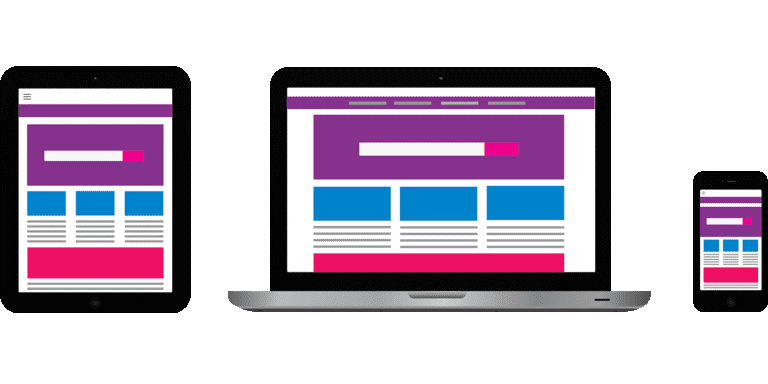
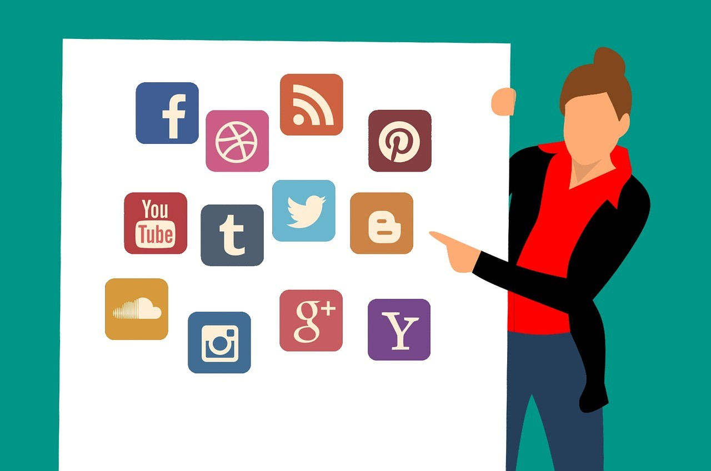
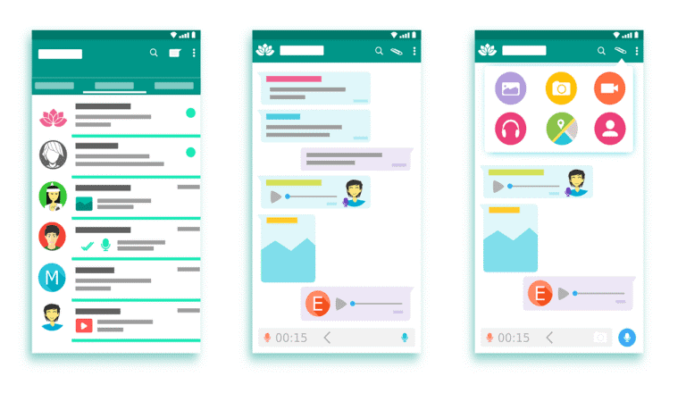

Wait! What Happened to SEO?
You made it to 2019 and so did SEO. It’s true – some of the top SEO trends for this year are reminiscent of what you likely already know, but what’s changed can’t be overlooked.
Staying on top of the best SEO practices for 2019 is a matter of adaptation. You’ll find the older specs you know and love have been blended in with newer features like AI, voice search and more. Make sure you stay up-to-date on the latest SEO trends to ensure your site remains relevant and competitive.
Since it’s often the small things that have the largest impact, Elite has compiled a short list of the best SEO practices for 2019.
1. Responsive-Web Design
These days, your readers are accessing your content on desktops, laptops, tablets, smartphones and even watches. If you think your website will simply adjust itself to look the same on all of these devices, then please, think again. Implementing responsive web design means ensuring your site content will fit the screen of any device it may be viewed on. This allows users to see your content in a way that is aesthetically pleasing, catered to their screen size and gives them the best possible user experience.
Implementing responsive web design has been proven to improve your overall position ranking while making users more inclined to spend time on your site.
2. Voice Search Optimization
Voice, with its commonplace in our daily lives, has shown to be a tricky concept in digital search and what marketers tend to overlook are the semantics.
Let’s look at how you write poetry: though also relying on pen and paper, the way you write a note to someone differs entirely from the way you would write a poem. Making the most out of voice search is solely about studying the way people speak. Put yourself in the mindset of your users to channel how they would realistically phrase their voice searches and then respond accordingly.
3. Blockchain Security
We should be happy that blockchain is now a novelty; it promises to create much more online security than in the past. Now of course, you can start a digital coin with blockchain, but protecting data is more optimal for small businesses. This means that you can keep your membership site away from people who don’t pay.
Automation is also in the mix; law-binding agreements, resources and details can be written up in a jiffy. Blockchain allows you to consider doing business faster and with unprecedented safety involved.
4. Schema Markup and Video Content
If you haven’t yet been introduced to schema markup, now’s the time. Schema markup is essentially the code that you can use for your website to help search engines deliver more informative results to those searching.
What schema does is “extraction by transcription.” This essentially creates a script out of a video making it optimized and accessible. What’s spoken in your video content then gets rendered as your digital marketing plan.
In 2019, we need to be looking to schema markup to make the most out of our video content. It goes without saying; people love film, but with a spectrum of content online, no one will find your video if it’s not optimized.
5. Social Media
This SEO trend shouldn’t be news; social media has been on the rise for years and remains at the forefront of the best SEO practices for 2019. The truth is simple; you don’t have to invest your life into making people gawk at the exciting things you do on social media, just be sure to have an active profile and to “occasionally” post content there to stay relevant and credible.

6. Excellent Quality and Structured Formatting
While content remains king, the co-king of online marketing is data. There’s an endless world of “things to know,” that users look to discover online, and this knowledge is only deciphered by reading it. Conveying your message, if you’re to have “quality” content as defined by the search engines, begins with structure. That’s achieved by carefully crafting your titles, tags, subheads, bulleted lists and infographics.
Work to maintain the quality of your content while also focusing on keeping a structured format.
7. (User Experience) UX Design
User experience (UX) design is what makes your readers want to stick around. With so many web pages and online platforms to choose from, the thing that’s going to put your site above the rest is an accessible, easy-to-use web design. To boost your UX design, ensure that your content can be touched, pressed, pulled, shrunken and then easily read on all devices.
8. Page Speed
Let’s face it; people are impatient. Studies show that 50% of readers are likely to leave a site if it doesn’t load within three seconds. Cut out the wait time and get your site running smoothly.
While we’ve provided you with a brief overview, it’s up to you to learn from and implement these SEO trends to improve your site in 2019. The reality is that 2020 isn’t so far off and you may get left behind if you don’t adjust to the new standards. Take your time, be specific and don’t overlook the fine details.